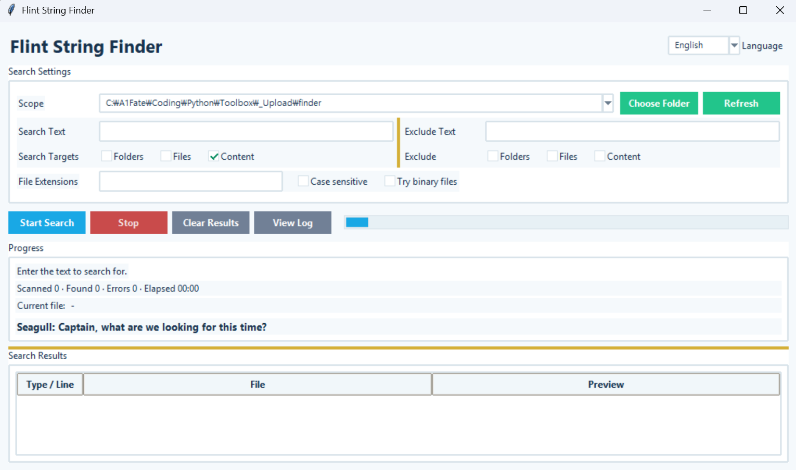

Flint String Finder
Version: 1.1.0
Flint String Finder
A Windows GUI search tool for finding files that contain specific text across multiple drives or folders.
How to Use
- Select the search scope. (Current folder, entire computer, drive, or folder)
- Enter the
Search Text. - If needed, specify file extensions (
py, md, txt, etc.) and enable case-sensitive search. - If you want to exclude certain folder names, file names, or files containing specific text, configure the exclusion options.
- Click
Start Search. - Double-click a result to open the file directly.
- Right-click a result to open the file or its containing folder.
Search Exclusions
Files and folders that do not need to be searched can be excluded.
- Exclude folders by name
- Exclude files by name
- Exclude files containing specific text
- Skip the entire directory tree under excluded folders
Error Log
If a file cannot be accessed or read during a search, the error details are recorded in a log. Use View Log to check which files caused errors and why, or to clear the existing log.
Key Features
- Uses the current working folder as the default search location
- Search the entire computer or a specific drive
- Search a specific folder
- Search for text within files
- Exclude folders, files, or files containing specific text
- File extension filtering
- Case-sensitive search
- UTF-16 text file support
- Displays the current file, files scanned, matches found, and errors
- Displays elapsed time and search progress
- Stop an active search
- Records and displays search error logs
- Double-click a result to open the file
- Right-click a result to open the file or its containing folder
- Flint Captain & Seagull progress messages during long searches
Run:
python finder.py
Note:If you are using the executable (EXE) version, you do not need to run the Python command.